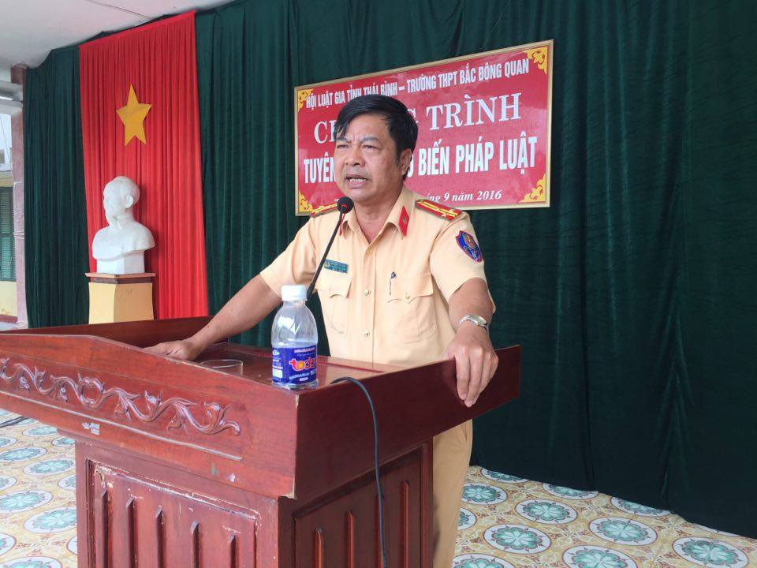

LỄ KỈ NIỆM 36 NĂM NGÀY NHÀ GIÁO VIỆT NAM 20/11
Hoà chung trong không khí cả nước chào mừng ngày Nhà giáo Việt Nam 20-11. Sáng ngày 20/11/2018, Trường THPT Bắc Đông Quan long trọng tổ chức Lễ kỷ niệm 36 năm Ngày Nhà giáo Việt Nam 20/11/1982 – 20/11/2018.

NGOẠI KHÓA AN TOÀN GIAO THÔNG TRƯỜNG THPT BẮC ĐÔNG QUAN
Thực hiện kế hoạch công tác đoàn và phong trào thanh niên trường học, năm học 2018 - 2019, đồng thời nhằm giáo dục, nâng cao ý thức văn hóa giao thông cho các em học sinh, sáng ngày 17 tháng 9 năm 2018, Đoàn trường THPT Bắc Đông Quan phối hợp với Đội Cảnh sát giao thông, công an huyện Đông Hưng tổ chức buổi ngoại khóa với chủ đề An toàn giao thông.